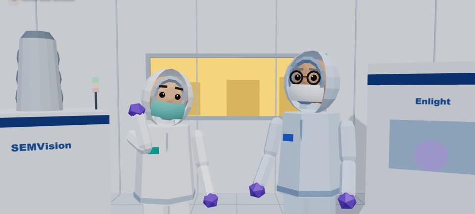
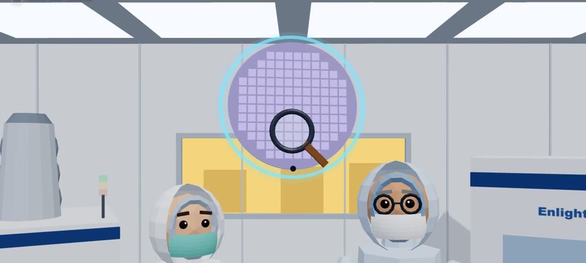
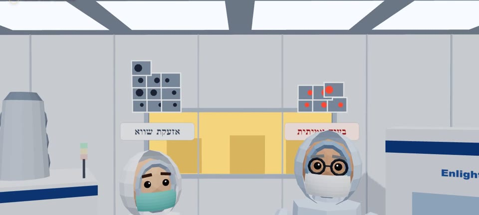
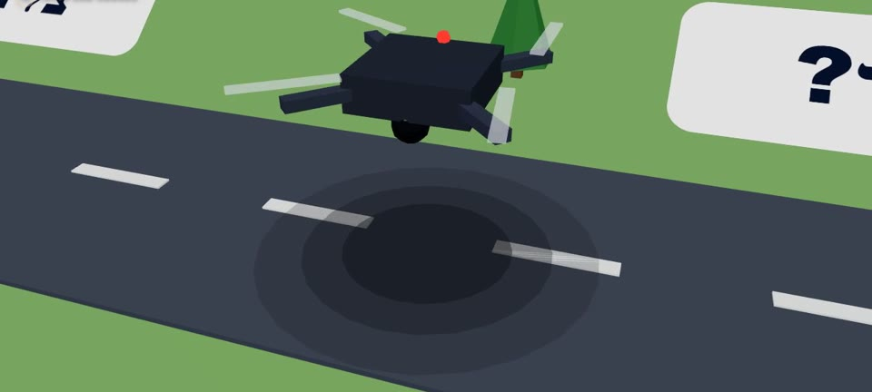

קליטת עובדים
מה החברה עושה, איך המוצר עובד ומה קורה ברצפת הייצור, לעובדים שלא מגיעים מהתחום.
סרטוני הסבר והדרכה לחברות טכנולוגיה
סרטונים מונפשים ב-2D וב-3D, בעברית ובאנגלית. לקליטת עובדים חדשים, להדרכות, ולהסבר המוצר לכל מי שאינו מהנדס.

דמו · 2:09שירותים
כל סרטון נכתב לקהל שלו: מה הוא כבר יודע, מה הוא צריך להבין, ומה יגרום לו לזכור.

מה החברה עושה, איך המוצר עובד ומה קורה ברצפת הייצור, לעובדים שלא מגיעים מהתחום.

אבטחת מידע, שימוש בכלי AI ותהליכי עבודה. הדרכה קצרה שאנשים באמת רואים עד הסוף.

ללקוחות, למשקיעים ולצוותי מכירות: מה המוצר עושה ולמה זה חשוב, בלי ז'רגון.
דמו
סרטון קליטה לעובדים שמעולם לא היו בחדר הנקי. שני מהנדסים מסבירים מה הורס צ'יפים, איך מוצאים פגמים, ולמה צריך מיקרוסקופ אלקטרונים.
הגישה
כל מונח טכני מקבל תמונה מהיומיום. אם עובד מכספים מבין, גם המהנדס יבין.
שתי נקודות אישור לפני ההפקה: התסריט והפריימים. ככה התוכן מדויק, והתיקונים זולים.
כמו שמדברים במשרד: המונחים המקצועיים באנגלית, כל השאר בעברית טבעית.
תהליך
שולחים מסמך, מצגת או נוהל, וממנים איש מקצוע אחד שמאשר.
אני כותב, אתם מאשרים. שינויים בשלב הזה לא עולים כלום.
רואים את הסרטון בתמונות ושומעים את הקולות לפני ההפקה המלאה.
סרטון מוכן לרוחב, ואם צריך גם גרסה לאורך לרשתות.
שאלות
בדרך כלל כשבועיים מהשיחה הראשונה ועד סרטון מוכן. הקצב תלוי בעיקר בזמני האישור אצלכם.
חומר מקור, כמו מסמך, מצגת או נוהל, ואיש מקצוע אחד שזמין לאשר את התסריט ואת הפריימים.
כן. כל סרטון יכול לצאת בעברית, באנגלית, או בשתי גרסאות.
2D מהיר יותר ומתאים להסברים עם תרשימים וטקסט. 3D מתאים כשרוצים דמויות ועולם שלם, כמו בדמו. נחליט יחד בשיחה הראשונה.
בגלל זה יש שתי נקודות אישור לפני ההפקה. ככה טעויות נתפסות בתסריט או בפריימים, לפני שהסרטון מרונדר.
שיחת היכרות של 20 דקות: מה צריך להסביר, למי, ואיך זה יכול להיראות.